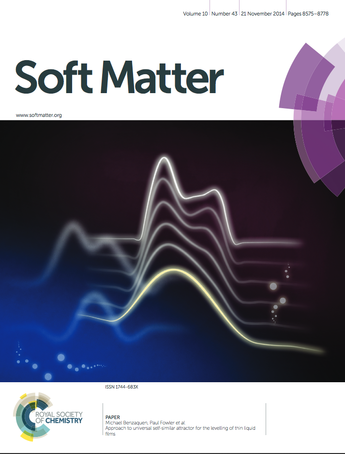
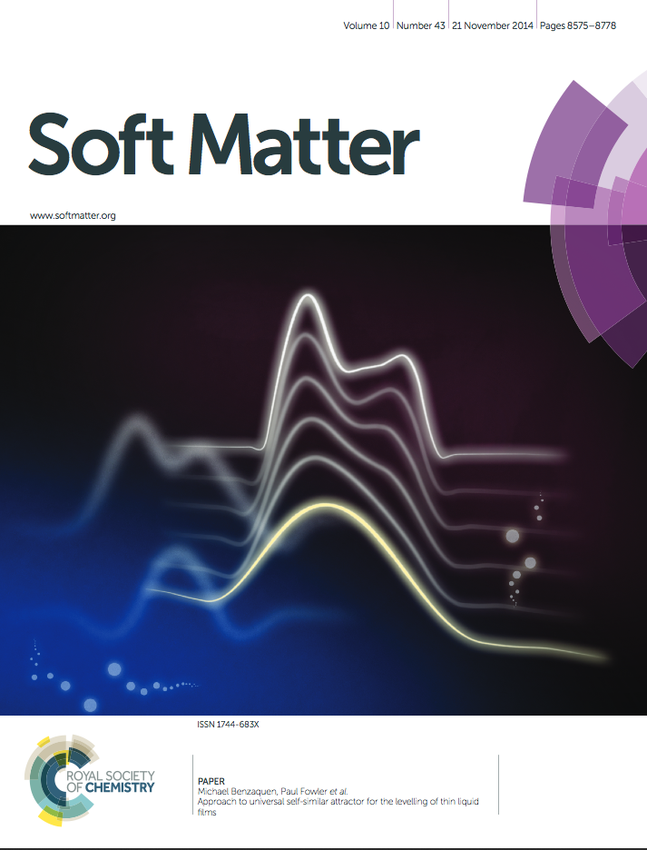
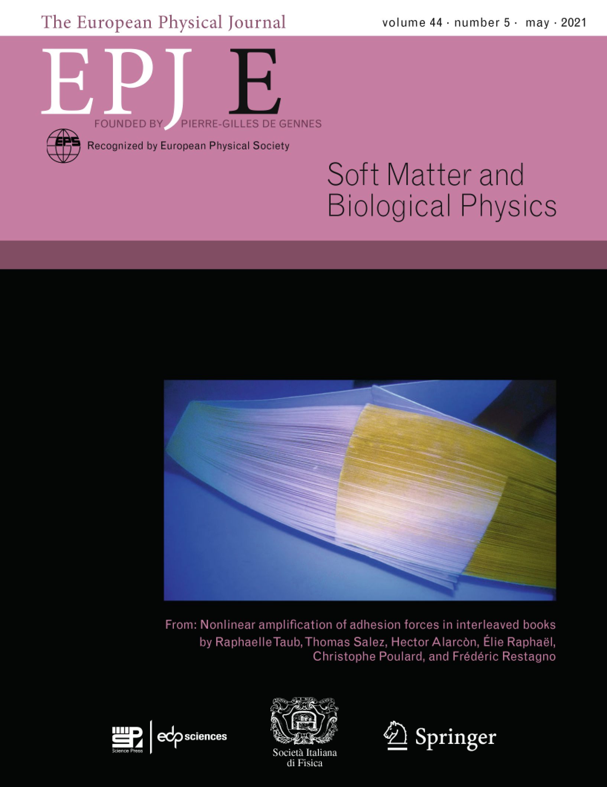
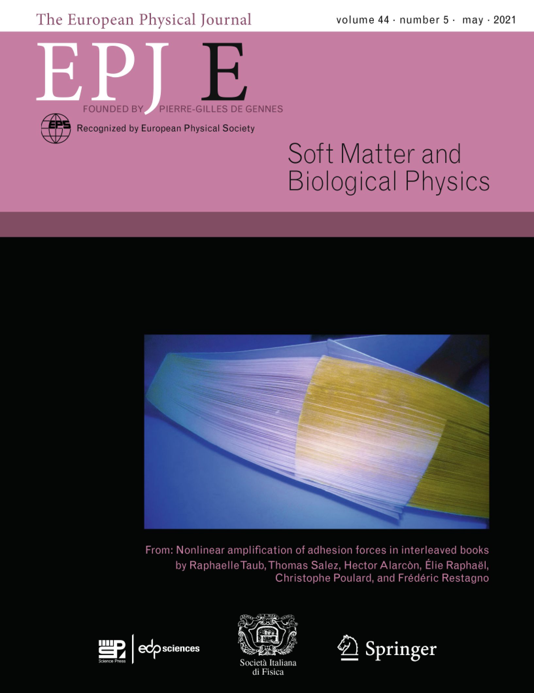

Stretching a solid modifies its
wettability… Or does it?
T. Salez, R.
Schulman, M. Trejo, E. Raphael, K. Dalnoki-Veress
ChemViews, June
2020 DOI: 10.1002/chemv.202000046
Symmetrization of thin
free-standing liquid films via capillary-driven flow
V. Bertin, J.
F. Niven, H. A. Stone, T. Salez, E. Raphael, K. Dalnoki-Veress
Physical Review Letters, 124 (2020)
184502 PDF
Rearrangement of 2D aggregates of
droplets under compression: signatures of the energy
landscape from crystal to glass
J.-C.
Ono-dit-Biot, P. Soulard, S. Barkley, E. R. Weeks, T. Salez,
E. Raphael, K. Dalnoki-Veress
Physical Review Research, 2 (2020)
023070 PDF
Cooperative strings and glassy
dynamics in various confined geometries
M. Arutkin,
E. Raphael, J. A. Forrest, T. Salez
Physical Review E, 101 (2020)
032122 PDF
Direct measurement of the
elastohydrodynamic lift force at the nanoscale
Z. Zhang, V.
Bertin, M. Arshad, E. Raphael, T. Salez, A. Maali
Physical Review Letters,
124 (2020) 1054502-(1-5)
PDF , supplementary information : SI
Hydroelastic wake on a thin
elastic sheet floating on water
J.-C.
Ono-dit-Biot, M. Trejo, E. Loukiantcheko, M. Lauch, E.
Raphael, K. Dalnoki-Veress, T. Salez
Physical Review Fluids, 4
(2019) 014808
PDF
Unsteady wave pattern generated
by water striders
T. Steinmann,
M. Arutkin, P. Cochard, E. Raphael, J. Casas, M. Benzaquen
Journal of Fluid Mechanics 848
(2018) 370 PDF
Elastowetting of soft hydrogel
spheres
A.
Chakrabarti, A. Porat, E. Raphael, T. Salez, M. K. Chaudhury
Langmuir, 34
(2018) 3894-3900 PDF
Adhesion-induced fingering
instabilities in thin elastic films under strain
B.
Davis-Purcell, P. Soulard, T. Salez, E. Raphael, K.
Dalnoki-Veress
European Physical Journal E,
41 (2018) 36 PDF
Adsorption-induced slip
inhibition for polymer melts on ideal substrates
M. Ilton, T.
Salez, P. D. Fowler, M. Rivetti, M. Aly, M. Benzaquen, J. D.
McGraw, E. Raphael, K. Dalnoki-Veress, O. Bäumchen
Nature Communications, 9
(2018) 1172 PDF
Surface energy of strained
amorphous solids
R. D.
Schulman, M. Trejo, T. Salez, E. Raphael, K. Dalnoki-Veress
Nature Communications, 9
(2018) 982 PDF
Elastohydrodynamic wake and wave
resistance
M. Arutkin,
R. Ledesma-Alonso, T. Salez, E. Raphael
Journal of Fluid Mechanics 829 (2017)
538-550 PDF
Elastocapillary levelling of thin
viscous films on soft substrates
M. Rivetti,
V. Bertin, T. Salez, C.-Y. Hui, C. Linne, M. Arutkin, H. Wu,
E. Raphael, O. Bäumchen
Physical Review Fluids, 2 (2017)
094001-(1-13) PDF
Glass transition at interfaces
T. Salez, J.
D. McGraw, K. Dalnoki-Veress, E. Raphael, J. A. Forrest
Europhysics News, 48 (2017) 24-28 PDF
Liquid droplets act as "compass
needles" for the stresses in a deformable membrane
R. D.
Schulman, R. Ledesma-Alonso, T. Salez, E. Raphael, K.
Dalnoki-Veress
Physical Review Letters,
118 (2017) 198002-(1-6) PDF
Van der Waals interaction between
a moving nano-cylinder and a liquid thin film
R.
Ledesma-Alonso, E. Raphael, T. Salez, P. Tordjeman, D.
Legendre
Soft Matter, 13 (2017) 3822-3830 PDF
Molecular dynamics simulation of
the viscocapillary leveling of polymer films
I. Tanis, H.
Meyer, T. Salez, E. Raphael, A. C. Maggs, J. Baschnagel
The Journal of Chemical Physics,
146 (2017) 203327-(1-8) PDF
Elastocapillary bending of
microfibers around liquid droplets
R. D.
Schulman, A. Porat, K. Charlesworth, A. Fortais, T. Salez, E.
Raphael, K. Dalnoki-Veress
Soft Matter, 13 (2017)
720-724 PDF
Cooperative strings in glassy
nanoparticles
M. Arutkin, E.
Raphael, J. A. Forrest, T. Salez
Soft Matter, 13
(2017) 141 PDF
Capillary levelling of
free-standing liquid nanofilms
M. Ilton, M.
M. P. Couchman, C. Gerbelot, M. Benzaquen, P. D. Fowler, H. A.
Stone, E. Raphael, K. Dalnoki-Veress, T. Salez
Physical Review Letters,
117
(2016)1678011 PDF
Stress concentration in
periodically rough hertzian contact: Hertz to
soft-flat-punch transition
R.
Ledesma-Alonso, L. Léger, E. Raphael, F. Restagno , C. Poulard
Proceedings of the Royal Society
A, 472 (2016) 20160235 PDF
Wake and wave resistance on
viscous thin films
R.
Ledesma-Alonso, M. Benzaquen, T. Salez, and E. Raphael
Journal of Fluid Mechanics 792 (2016)
829-849 PDF
Slip-mediated dewetting of
polymer microdroplets
J. D. McGraw,
T. S. Chan, S. Maurer, T. Salez, M. Benzaquen, E. Raphael, M.
Brinkmann, K. Jacobs
Proceedings of the National
Academy of Sciences, 133 no. 5 (2016) 1168-1173 PDF
Self-amplification of solid
friction in interleaved assemblies
H. Alarcon,
T. Salez, C. Poulard, J.-F. Bloch, E. Raphael, K.
Dalnoki-Veress, F. Restagno
Physical Review Letters,
116
(2016) 015502-(1-5)
PDF
La transition vitreuse aux
interfaces
T. Salez, E.
Raphael
Reflets de la Physique,
46 (2015) 24-27 PDF
Universal contact-line dynamics
at the nanoscale
M. Rivetti,
T. Salez, M. Benzaquen, E. Raphael, and O. Bäumchen
Soft Matter, 11 (2015)
9247-9253 PDF
Symmetry plays a key role in the
erasing of patterned surface features
M. Benzaquen,
M. Ilton, M. V. Massa, T. Salez, P. Fowler, E. Raphael, K.
Dalnoki-Veress
Applied Physics Letters, 107 (2015)
053103 PDF
Wave drag on a submerged sphere
A.
Benusiglio, F. Chevy, E. Raphael, C.
Clanet
Physics of Fluids, 27 (2015)
072101-(1-11) PDF
Cooperative strings and glassy
interfaces
T. Salez, J.
Salez, K. Dalnoki-Veress, E. Raphael, J. A.
Forrest
Proceedings of the National
Academy of Sciences, 112 (2015)
8227 PDF
Influence of Slip on the
Plateau-Rayleigh Instability on a Fibre
S. Haefner, M. Benzaquen, 0. Bäumchen,
T. Salez, R. Peters, J.
D. McGraw, K. Jacobs, E. Raphael, K.
Dalnoki-Veress,
Nature Communications, 6
(2015) 7409 PDF
Indentation of a rigid sphere into
an elastic substrate with surface tension and adhesion
C.-Y. Hui,
T.Liu, T. Salez, E. Raphael, A. Jagota
Proceedings of the Royal
Society A 471 (2015) 20140727
PDF
Approach to universal self-similar attractor for the levelling
of thin liquid films
M. Benzaquen,
P. Fowler, L. Jubin, T. Salez, K. Dalnoki-Veress, E. Raphael
Soft Matter, 10 (2014)
8608-8614 PDF
Wake pattern and wave resistance for anisotropic moving
objects
A. Darmon, M. Benzaquen, E. Raphael
Physics
of Fluids, 26 (2014)
092106-(1-7) PDF
Transport properties of
overheated electrons trapped on a Helium surface
F. Closa,
E. Raphael, A.D. Chepelianskii,
European Physical Journal B,
87 (2014) 190 PDF
Viscoelastic effects and anomalous
transient levelling exponents in thin films
M. Benzaquen, T. Salez, E. Raphael
Europhysics Letters, 106 (2014)
36003-(1-6) PDF
A
direct quantitative measure of surface mobility in a glassy
polymer
Y. Chai, T. Salez, J. D.
McGraw, M. Benzaquen, K.
Dalnoki-Veress, E. Raphael, J. A. Forrest
Science, 343 (2014)
994 PDF
Capillary levelling of a
cylindrical hole in a viscous film
M. Backholm, M.
Benzaquen, T. Salez, E. Raphael, K. Dalnoki-Veress
Soft Matter, 10 (2014),
2550-2558 PDF
Kelvin wake pattern at large
Froud numbers
A. Darmon, M. Benzaquen, E. Raphael
Journal of Fluids Mechanics Rapids, 738
(2014) PDF
Electro-hydrodynamic instability
of stressed viscoelastic polymer films
F. Closa,
E.
Raphael, F. Ziebert
European Physical Journal E,
36 (2013)
124-(1-9) PDF
Relaxation and Intermediate
Asymptotics of a Rectangular Trench in a Viscous Film
0. Bäumchen, M. Benzaquen, T. Salez, J. D.
McGraw, M. Backholm, P. Fowler, E. Raphael, K.
Dalnoki-Veress,
Physical Review E, 88 (2013)
035001-(1-5) PDF
From adhesion to wetting of a
soft particle
T. Salez, M. Benzaquen,
E. Raphael
Soft Matter, 9
(2013), 10699-10704 PDF
Intermediate Asymptotics of the
Capillary-Driven Thin Film Equation
M.
Benzaquen, T. Salez, E. Raphael,
European Physical Journal E,
36 (2013)
82-(1-7) PDF
Capillary leveling of stepped
films with inhomogeneous molecular mobility
J. D. McGraw,
T.
Salez, 0. Bäumchen, E. Raphael, K.
Dalnoki-Veress
Soft Matter, 9
(2013) 8297–8305 PDF
Liquid Hertz Contact: softness of
weakly deformed drops on non-wetting substrates
F. Chevy,
A.D.
Chepelianskii, D. Quéré, E. Raphael
Europhysics Letters, 100 (2012)
54002-(1-5) PDF
Numerical solutions of thin film
equations for polymer flows
T. Salez,
J.
D. McGraw, S. L. Cormier, 0. Bäumchen, K.
Dalnoki-Veress, E. Raphael
European Physical Journal E,
35 (2012) 114 PDF
Capillary-driven flow induced by
a stepped perturbation atop a viscous film
T. Salez,
J.
D. McGraw, 0. Bäumchen, K.
Dalnoki-Veress, E. Raphael
Physics of Fluids, 24 (2012)
102111-(1-12) PDF
Beyond Tanner's Law: Crossover
Between Spreading Regimes of a Viscous Droplet on an
Identical Film
S. L.
Cormier, J. D. McGraw, T. Salez, E. Raphael, K. Dalnoki-Veress
Physical Review Letters,
109
(2012) 154501-(1-5) PDF
Self-Similarity and Energy Dissipation in Stepped Polymer
Films
J. D.
McGraw, T. Salez, 0. Bäumchen, E. Raphael,
K. Dalnoki-Veress
Physical Review Letters,
109 (2012) 128303-(1-5) PDF
Effects of in-plane elastic
stress and normal electric stress on viscoelastic thin film
stability
F. Closa,
F. Ziebert, E. Raphael
Mathematical Modelling of
Natural Phenomena,
7 (4) (2012) 6 PDF
Capillary-Gravity Waves on
Depth-Dependent Currents: Consequences for the Wave
Resistance
M.
Benzaquen, E. Raphael
Europhysics Letters, 97 (2012)
14007-(1-4) PDF
Wave resistance for capillary
gravity waves: Finite size effects
M.
Benzaquen, F. Chevy, E. Raphael
Europhysics Letters, 96 (2011)
34003-(1-5) PDF
Wave drag on floating bodies
M. Le
Merrer, C. Clanet, D. Quéré, E. Raphael, F. Chevy
PNAS, 108 (2011)
15064-15068 PDF
Strong Screening in the Plum
Pudding Model
A.D.
Chepelianskii, F. Closa, E. Raphael, E. Trizac
Europhysics Letters, 94 (2011)
68010-(1-5) PDF
Interplay of internal stresses,
electric stresses, and surface diffusion in polymer films
F. Closa,
F. Ziebert, E. Raphael
Physical Review E, 83 (2011)
051603-(1-13) PDF
Capillary-Based Static
Self-Assembly in Higher Organisms
J.
Voise, M. Schindler, J. Casas, E. Raphael
J. R. Soc. Interface, 8 (2011)
1357-1366 PDF
Adhesion of Nanoparticles
J.-M.
Carrillo, E. Raphael, A. Dobrynin
Langmuir, 26 (2010)
12973–12979 PDF
Capillary-Gravity Waves Generated
by a Sudden Object Motion
F. Closa,
A.
D. Chepelianskii, E. Raphael
Phys. Fluids , 22
(2010) 052107-(1-6) PDF
Self-Consistent Theory of
Capillary-Gravity Waves Generation by small Moving Object
A. D.
Chepelianskii, M. Schindler, F. Chevy, E. Raphael
Physical Review E ,
81 (2010) 016306-(1-7) PDF
Simple View on Fingering
Instability of Debonding Soft Elastic Adhesives
T.
Vilmin, F. Ziebert, E. Raphael
Langmuir, 26 (2010)
3257-3260 PDF
Tuning Microcapsules Surface
Morphology Using Blends of Homo and Copolymers of PLGA and
PLGA-PEG
E.
Pisani, C. Ringard, V. Nicolas, E. Raphaël, V. Rosilio, L.
Moine, E. Fattal, N. Tsapis
Soft Matter 5
(2009) 3054-3060 PDF
Dewetting of Thin Polymer Films:
Influence of Interface Evolution
F.
Ziebert, E. Raphael
Europhysics Letters, 86 (2009) 46001-(1-6)
PDF
On the Effective Charge of
Hydrophobic Polyelectrolytes
A. D. Chepelianskii, F. Mohammad-Rafiee, E. Trizac, E.
Raphael
Journal of Physical Chemistry B,
113 (2009) 3743-3749 PDF
Dewetting Dynamics of Stressed
Viscoelastic Thin Polymer Films
F.
Ziebert, E. Raphael
Physical Review E ,
79 (2009) 031605-(1-10) PDF
Conformation of Adsorbed Comb
Copolymer Dispersants PDF
R.J.
Flatt, I. Schober, E. Raphael, C. Plassard, E. Lesniewska
Langmuir, 25 (2009) 845-855
Polymer Physics and
Superplasticizers
R. J.
Flatt, I. Schober, E. Raphael, E.
Lesniewska, C. Plassard
American Concrete Institute
Special Publication, 22 (2009)
113-122
Dewetting as an investigative tool
for studying properties of thin polymer films
G. Reiter, S. Al Akhrass, M. Hamieh, P. Damman, S. Gabriele, T.
Vilmin, E. Raphael
European Physical Journal J, 166 (2009) 165–172
PDF

Older
publications
See here
My Erdos
number: See here

 
 
